この対象に、この投資をしたら、何が返ってきたのか。世界には、教育投資のリターンをランダム化比較試験と数十年の追跡で厳密に測ってきた記録が蓄積されています。この図鑑はその代表例を、対象 × 介入 × コスト × リターン × 経路の軸で一枚ずつ収めたものです。効いた話だけでなく、効かなかった・逆効果だった「毒キノコ」も同じ棚に並べます。姉妹編の社会の仕組み図鑑が「回路」を集めた地図なら、こちらは回路に流した1ドルの行方を追う帳簿です。各項目にエビデンス水準ラベルと原典リンクを添えています。
各カードは共通の軸で書かれています——誰に（対象）、何を（介入）、いくらで（コスト）、何が・いつ返ってきたか（リターン）、なぜ効いたか（経路）。金額や効果量は原典の代表値で、通貨・物価の換算方法により幅があります。正確な値は必ず原典をあたってください。
あわせて、裏付けの種類を示すラベルを付けています。挿絵にはどの一枚にも、金貨がひとつ描かれています。最初に投じられた1ドルの行方を、探してみてください。
主に依拠しているデータベース・評価機関：
J-PAL（MIT貧困アクションラボ）
Heckman Equation
Social Programs That Work
MDRC
Campbell Collaboration
※図鑑ファミリーの位置づけ——社会の回路の全体像は社会の仕組み図鑑、対話のミクロな技法は世界の対話技法図鑑へ。この図鑑は「学びへの投資の帳簿」を受け持ちます。
最も早い投資が、最も高く返る。教育経済学が半世紀かけてたどり着いた、いちばん頑健な結論です。しかもリターンの多くは学力テストではなく、犯罪の減少や就労の安定——「非認知」の経路を通って返ってきます。
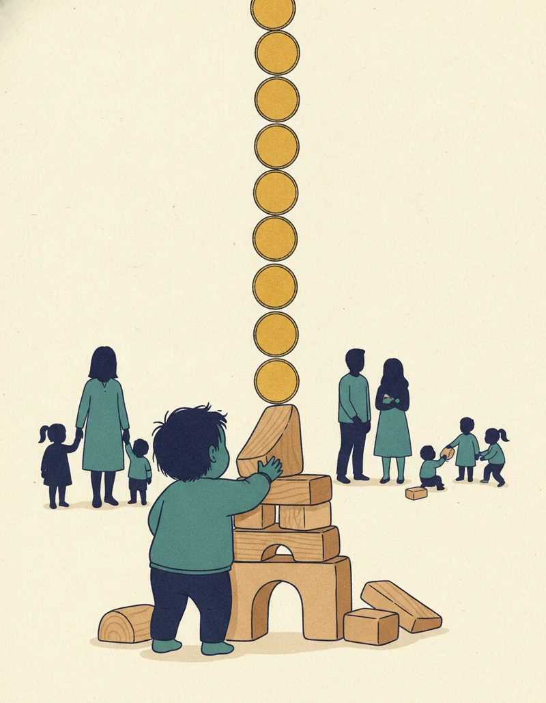
ミシガン州の低所得家庭の3〜4歳児123人に、質の高いプレスクールと家庭訪問を2年間提供した実験。40年の追跡で、投資1ドルあたり約12.9ドルが社会に返り、ヘックマンらの再分析でも年率7〜10%の収益率が確認されました。興味深いのは経路です。IQの差はやがて消えたのに、犯罪の減少・高卒率・就労の安定はずっと残った。返ってきたのは点数ではなく人生の側だった——非認知能力研究の原点であり、この図鑑の一枚目にふさわしい記録です。シカゴの公立校版（Child-Parent Centers）でも同水準の便益が追認されています。
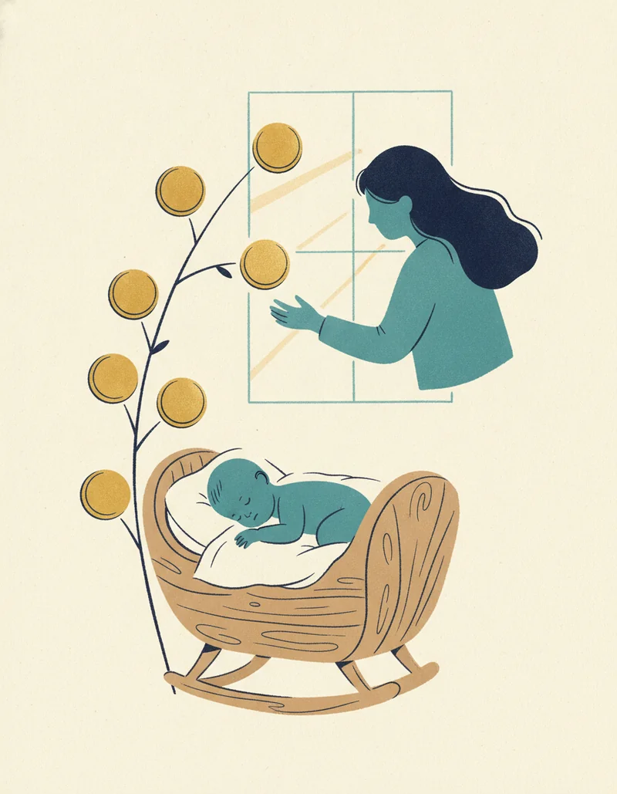
生後数週間の乳児から5年間、フルタイムの保育・教育を提供した実験。ペリーより早く、より長く。40年後の追跡では学力や所得に加えて、30代の血圧や生活習慣病リスクまで下がっていました。健康効果まで含めた収益率をヘックマンは年率13%と推計しています。母親が働けるようになった効果も大きく、「子どもへの投資」は同時に「親への投資」でもある、と教えてくれる一枚です。
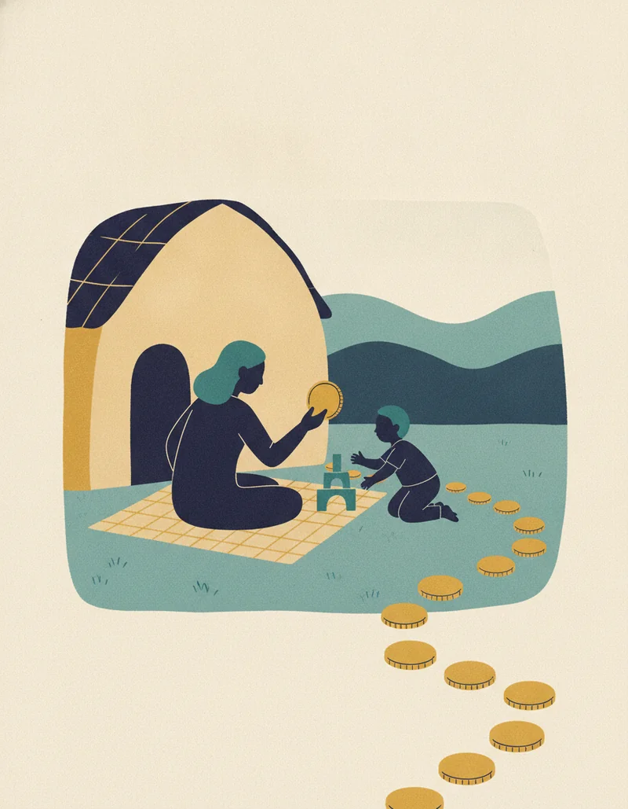
発育阻害のある1〜2歳児の家庭を、地域の保健ワーカーが週1回・2年間訪ね、親子の遊び方と関わり方を伝えた——介入はそれだけです。20年後、参加者の賃金は対照群より25%高く、栄養状態の良かった比較集団の水準にほぼ追いついていました。高価な施設ではなく「親の関わり」への投資が国の貧困を越えて効く。Science誌に載ったこの研究は、途上国の幼児政策の流れを変えました。
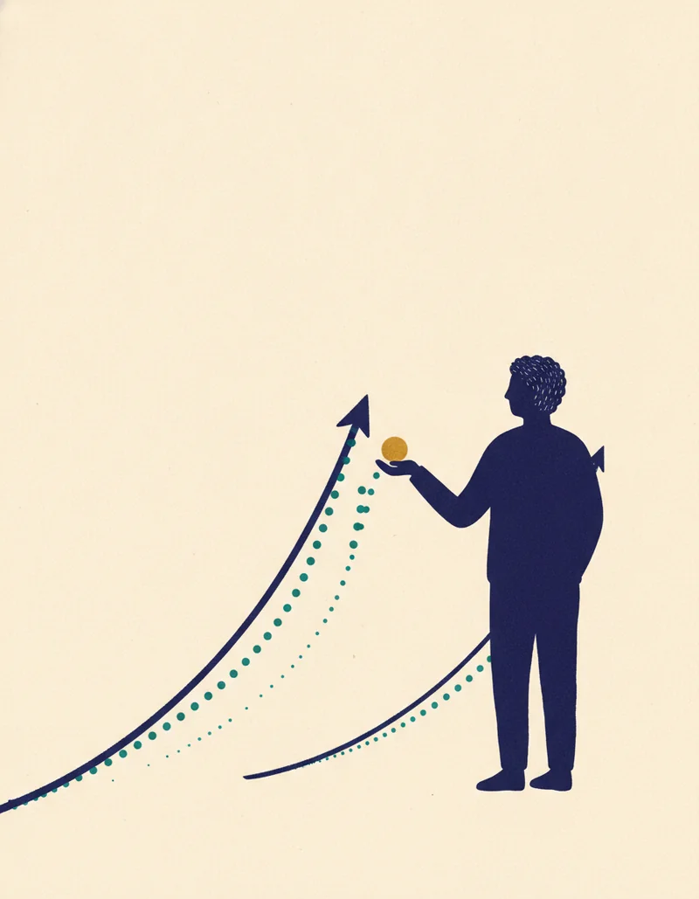
低所得家庭の就学前児童に保育・健康・栄養・親支援を届ける、米国の全国プログラム。テストスコアの改善が小学校の間に薄れてしまう「フェードアウト」で有名ですが、長期の追跡では高卒率や健康など、大人になってからの改善が残ります。点数は消えるのに、人生は変わる——ペリーと同じ謎が全国規模でも現れました。測るものを間違えると、効いている投資を「効かない」と誤診してしまう、という教訓でもあります。
同じ1ドルでも、注ぎ込む場所しだいでリターンは桁ごと変わります。途上国での実験の蓄積は、教育投資の「単価表」を初めて可視化しました。最良の投資が薬だったり、情報一枚だったりするのがこの章の面白さです。
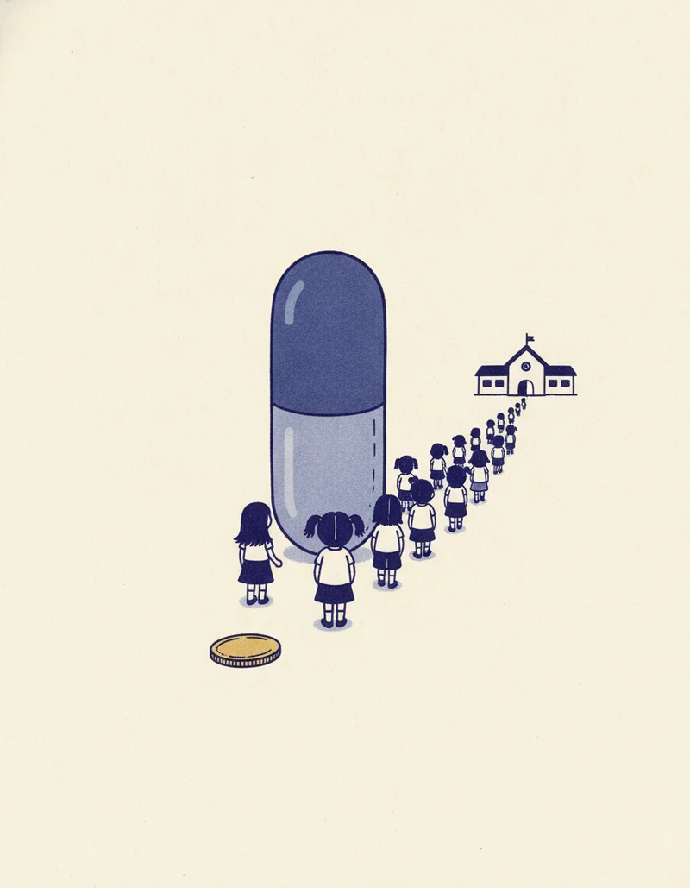
寄生虫の流行地域の小学校で、年1〜2回・1人あたり約0.5ドルの駆虫薬を配った実験。欠席が大きく減り、20年後には時給が13%、消費が14%高くなっていました。社会的収益率は控えめに見積もって年率37%。「教育のための最良の投資」が教室の外側——健康——にあった例です。ただし再分析をめぐる「Worm Wars」論争も有名で、エビデンス自体が戦場になりうることまで教えてくれます。
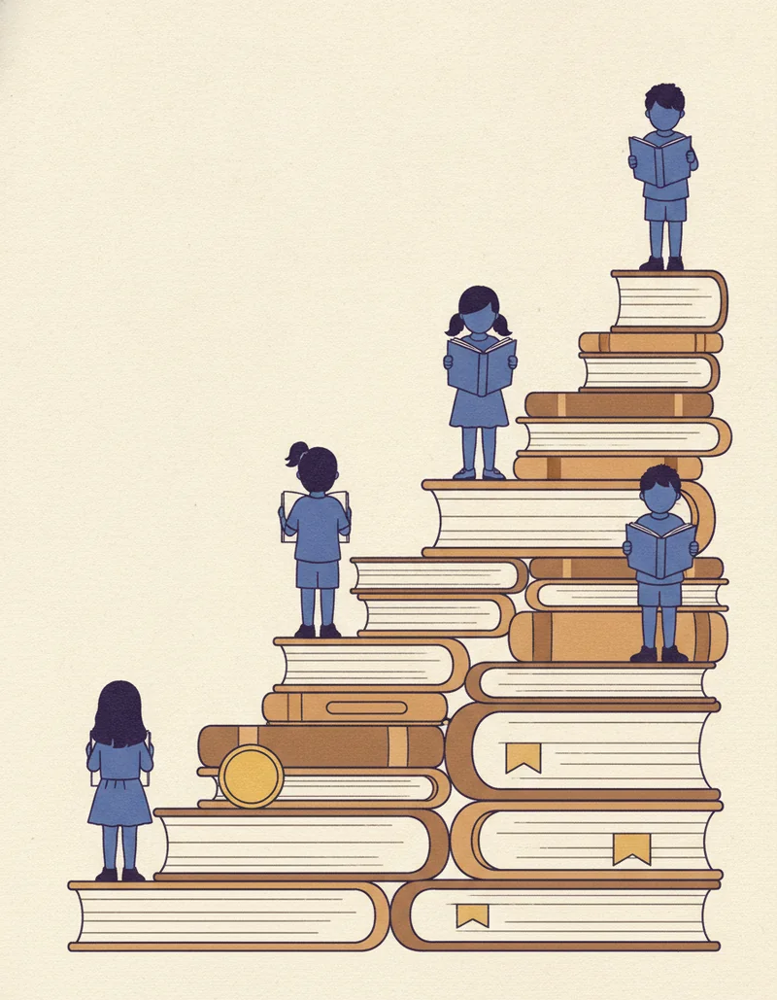
学年ではなく「いまの習熟度」でグループを組み直し、基礎の読み書き計算に集中する。インドのNGOプラサムが開発したこの方法は、15年にわたるRCTの反復で、厳密に検証された教育プログラムの中で最大級の学力効果と費用対効果を示し続け、インドとアフリカで8,000万人以上に届いています。高価な機材も追加の教員も要らない。「並べ替える」だけで学びが動き出すという、設計の発明です。
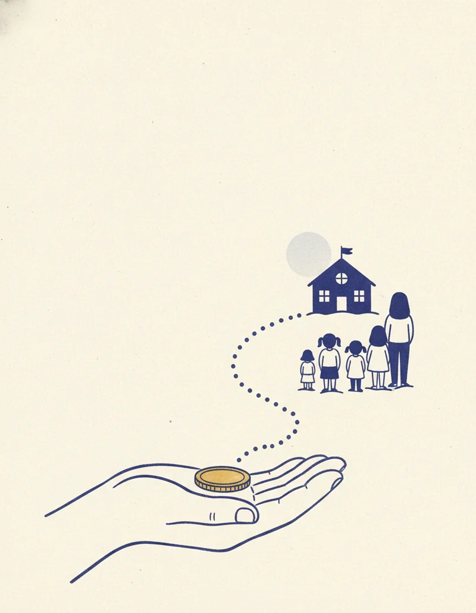
子どもの就学と健診を条件に、貧困世帯の母親へ現金を給付する制度。導入時からRCTでの検証が制度設計に組み込まれ、中等教育の就学率が約8ポイント上がることが確認されました。効果が数字で示されていたため政権交代を生き延び、いまや60カ国以上に広がる標準政策に。「検証が制度を守る」ことを示した政策評価史の金字塔です。仕組み図鑑のCCTの項と対になっています。
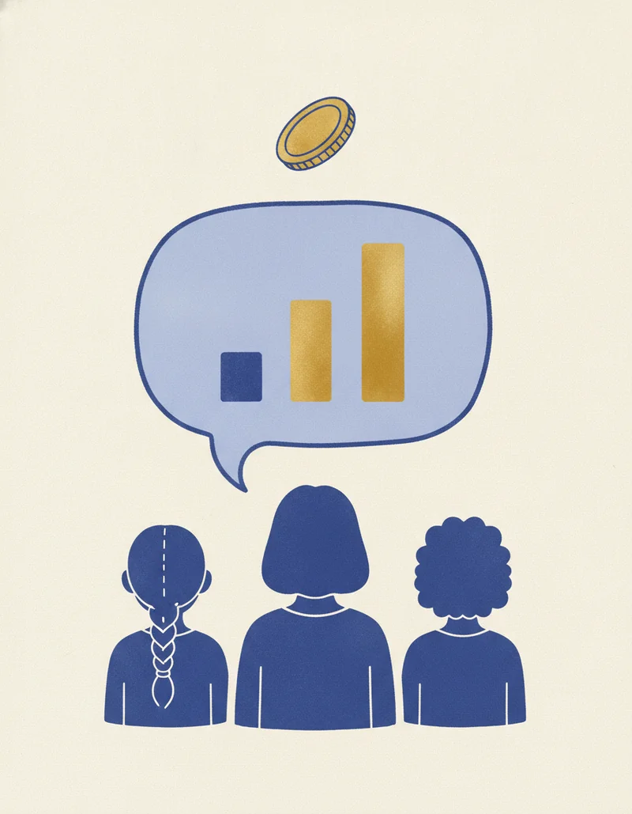
中学生の男子に「中卒と高卒で実際の賃金がどれだけ違うか」を伝えた——介入はほぼそれだけ、費用はほぼゼロです。生徒たちは賃金差を大幅に過小評価しており、正しい情報を得た生徒は就学年数が0.2〜0.35年延びました。J-PALの費用対効果比較では、100ドルあたり0.23年分の就学という最上位クラス。足りなかったのはお金でも意欲でもなく、情報だったという発見です。
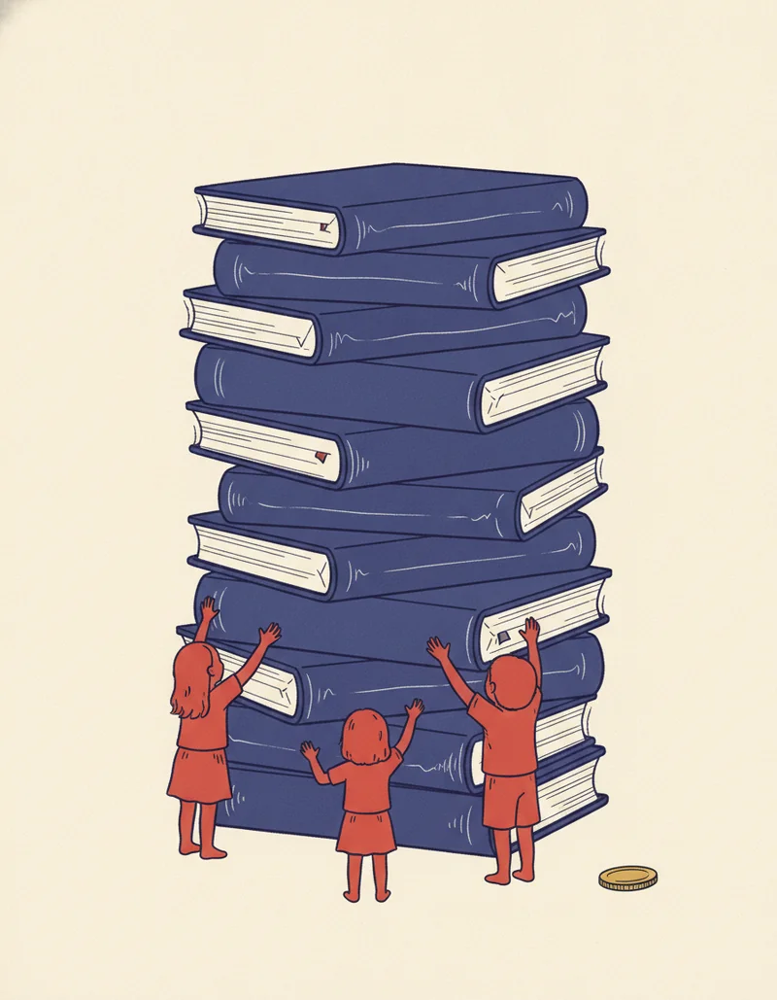
「本さえ配れば学べるはず」という直感を、RCTは裏切りました。ケニア農村部での公式教科書の配布は平均的な学力を上げず、もともと成績上位の生徒だけを伸ばした。教科書は英語——多くの子にとって第三言語——で書かれ、大半の子には難しすぎたのです。カリキュラム自体が上位層向けにできているというこの発見が、のちのTaRLにつながりました。失敗が次の発明の親になった、毒キノコ章の先触れです。
先進国の学校の内側では、何にお金を使うと効くのか。この章の三枚が示すのは、箱（教室・機材）より人（教員・伴走者）に投資したほうが利回りが高い、という一貫したパターンです。
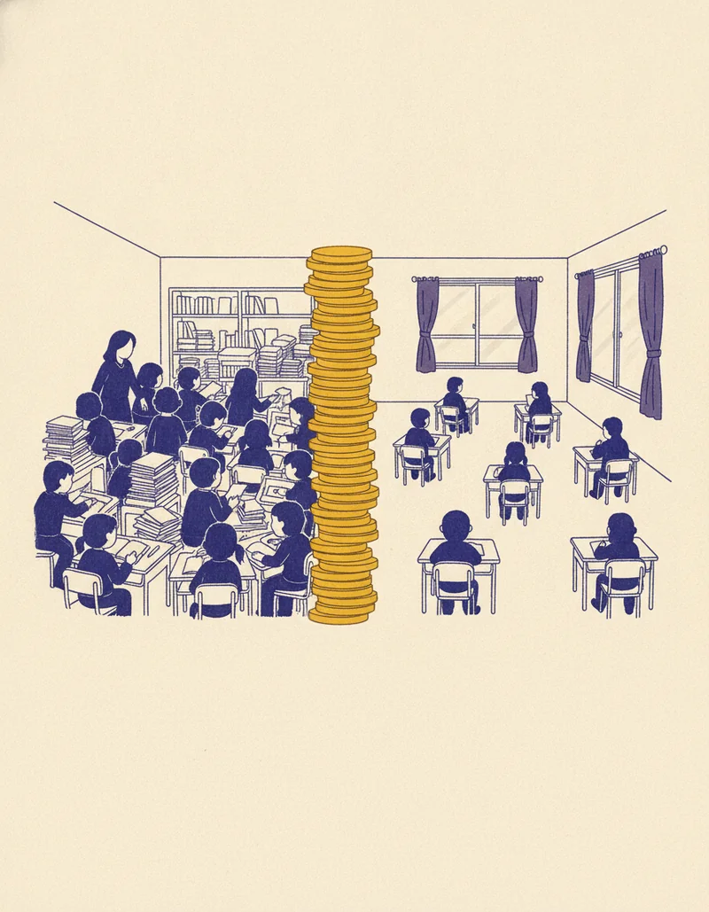
テネシー州で1万人超の子どもを、幼稚園〜小3の間だけ13〜17人の少人数学級へランダムに割り当てた大実験。学力は約0.2SD改善し、追跡では大学進学率も上がりました。ただしコストは高く、成人後の所得への効果は統計的にはっきりしません。さらにカリフォルニア州が一斉導入した際には教員の質が追いつかず、効果が薄れた。「効く」「割に合う」「広げられる」は全部別の問題だと教えてくれる、教育政策の基準点です。
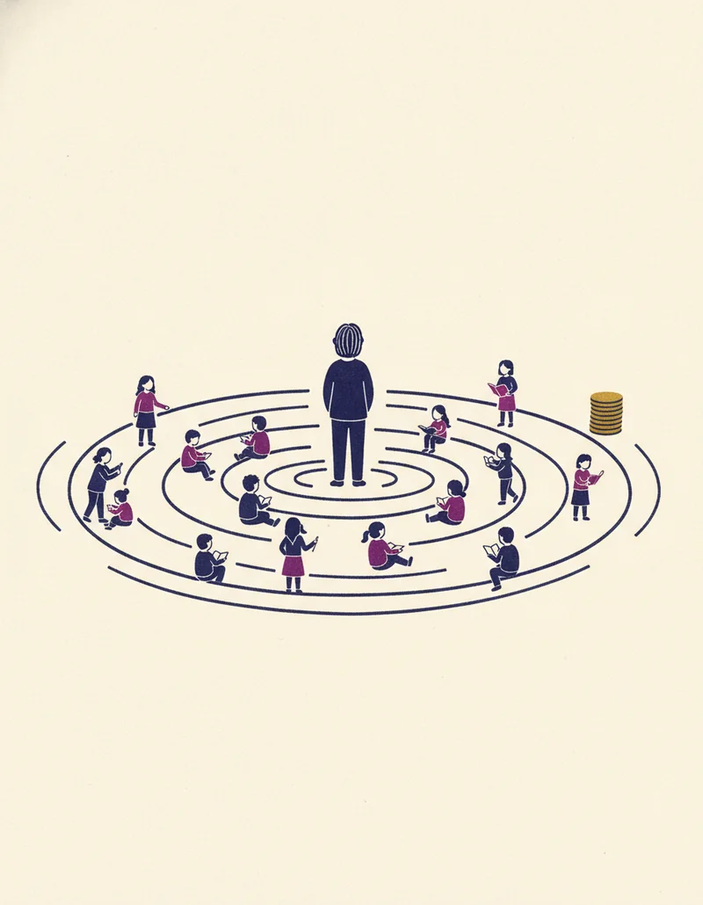
NYの小中学生250万人の学校記録を納税記録につないだ研究。付加価値の低い教員（下位5%）を平均的な教員に置き換えるだけで、1クラスあたり生涯所得の現在価値が約25万ドル増えると推計されました。良い教員は大学進学率を上げ、10代での出産を減らす。校舎でも教材でもなく「誰が教えるか」こそ教育投資の最大級の変数だという、巨大データの証言です。
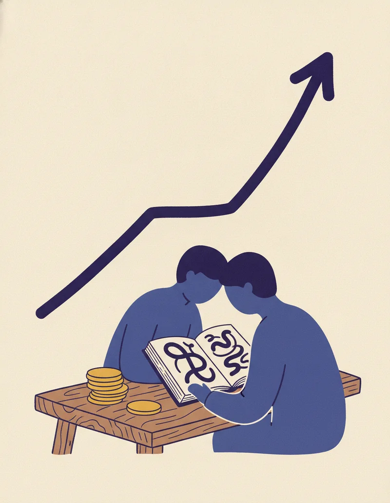
遅れのある生徒に1対1〜2の個別指導を、放課後ではなく正課の時間内に週数回。複数のRCTで数学0.3SD前後という大きな効果が繰り返し確認され、コロナ後の学習損失対策の本命になりました。ただし年間数千ドル/人と安くはありません。TaRLが「安くて効く」なら、こちらは「高いが確実に効く」。財布と緊急度に応じて選ぶ、処方箋の関係にあります。
能力もお金も足りているのに、書類一枚・手続き一つで進路が閉ざされることがあります。この章は「壁を低くする投資」の記録。伴走すれば数十ドルで人生が動き、送り手の顔が見えなければ80万通のSMSも空を切ります。
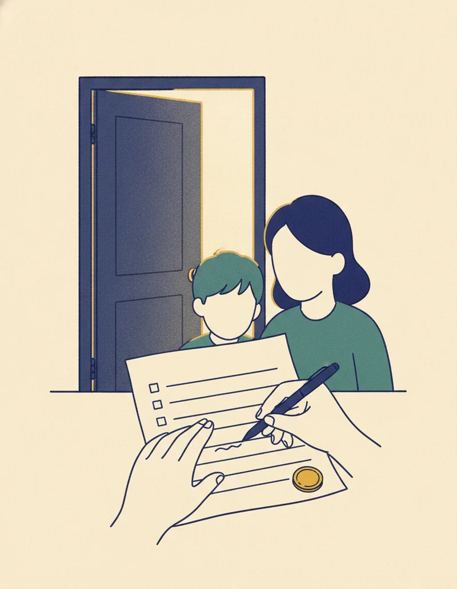
米国の奨学金申請書FAFSAは100問超。低所得家庭が確定申告支援の窓口に来たその場で記入を約8分手伝い、受給見込み額を見せた実験です。費用は1人あたり約88ドルで、大学進学・継続が8ポイント上昇。決定的なのは、情報だけ渡して手を動かさなかった群では効果がゼロだったこと。壁は「知らないこと」ではなく「書類そのもの」だった——伴走の価値を示した行動経済学の古典です。
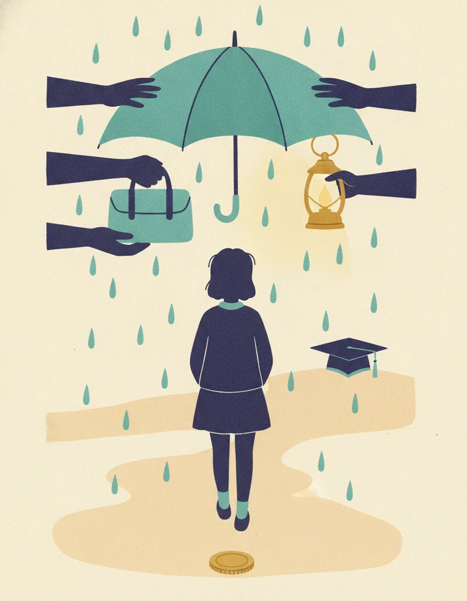
NY市立大学の2年制課程で、専任アドバイザー・授業料の穴埋め・交通費・チュータリングを「束」にして3年間提供したプログラム。単品では効かなかった支援が、束になると3年卒業率を22%から40%へほぼ倍増させました。1人あたり約1.4万ドルの追加費用をかけても、卒業生1人あたりの費用はむしろ下がった。オハイオ州での追試でも再現。「決め手をひとつ探す」のをやめた設計が効いた例です。
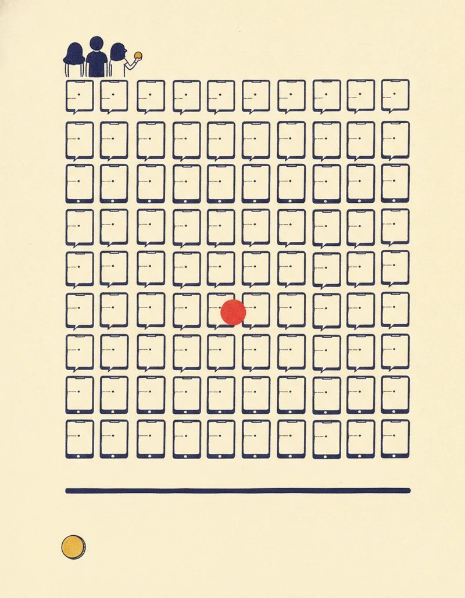
小規模実験で有望だったFAFSA提出リマインダーを、80万人超の全国規模で展開したところ——効果はゼロでした。文面、タイミング、個別相談の追加、どの工夫も効かなかった。地元の高校やカウンセラーという「顔の見える送り手」を失うと、同じ文面でも届かなくなる。パイロットの効果量には実施者の熱量が含まれている、というスケールアップ問題の代表例です。上のFAFSA伴走との対比でお読みください。
教育投資は子どもで終わりません。ただし大人の学びの世界は、公教育に比べて検証が驚くほど手薄です。厳密に測られた数少ない例と、その隣に広がる巨大な空白を、この章に置きます。
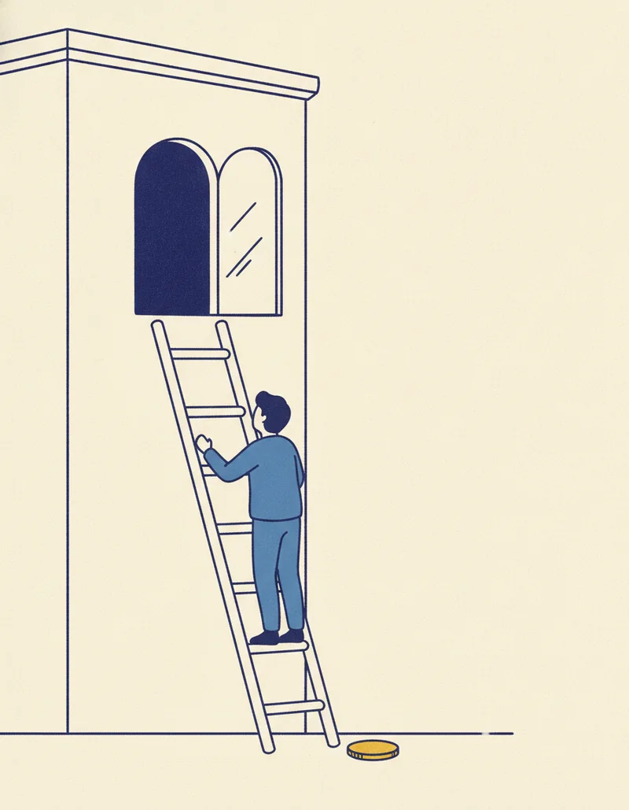
低所得の若者に、IT・金融など採用意欲の高い業界へ絞った訓練6ヶ月と企業実習6ヶ月を提供するYear Up。RCTで年収+30%（約8,000ドル）が7年後も持続し、米国の職業訓練で過去最大級の効果とされます。社会全体では投資1ドルにつき2.46ドルの純便益。一般的な公的職業訓練の効果が小さく消えやすいのと対照的で、「何でも教える」より「出口から逆算して教える」設計が効いた例です。
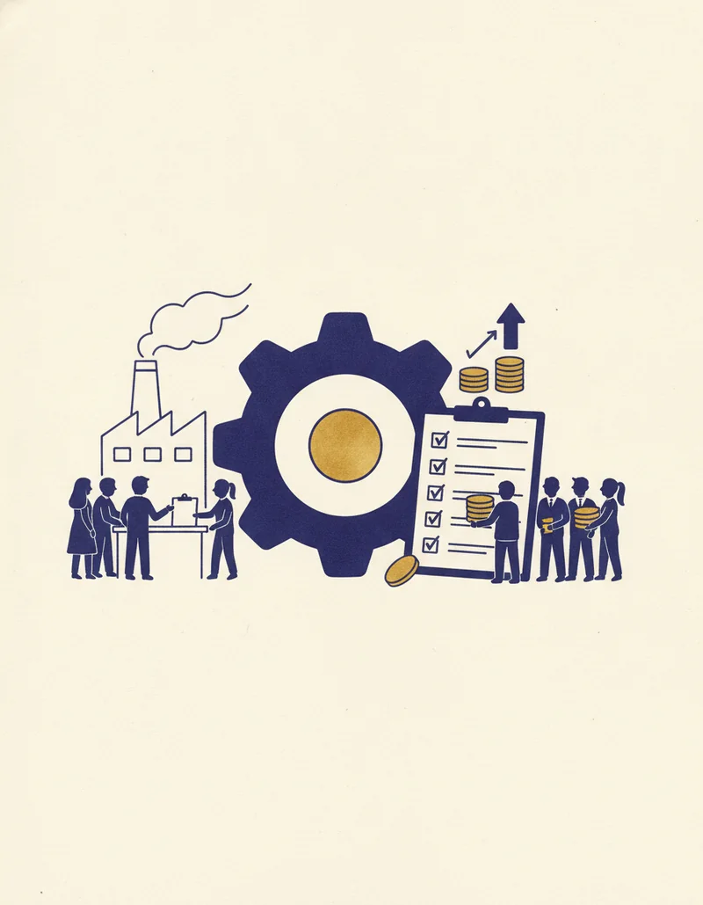
インドの大手繊維工場に、品質管理や在庫管理などの経営手法をコンサルタントが約5ヶ月指導するRCT。生産性は初年度で17%上がり、数年内の工場新設にまでつながりました。示唆は二つあります。大人への教育投資も厳密に測れること。そして、日本を含む企業研修の世界には、これに匹敵する検証がほとんど存在しないこと。KirkpatrickやPhillipsの「枠組み」はあっても「実験」がない——この空白こそ、この図鑑が指さしたい場所です。
リターンの分子を大きくする代わりに、分母（コスト）を極限まで小さくする道もあります。効果量は小さくても、費用が1ドルなら費用対効果は跳ね上がる——「安さは正義」の章です。ただし前章のスケール失敗と併せてどうぞ。
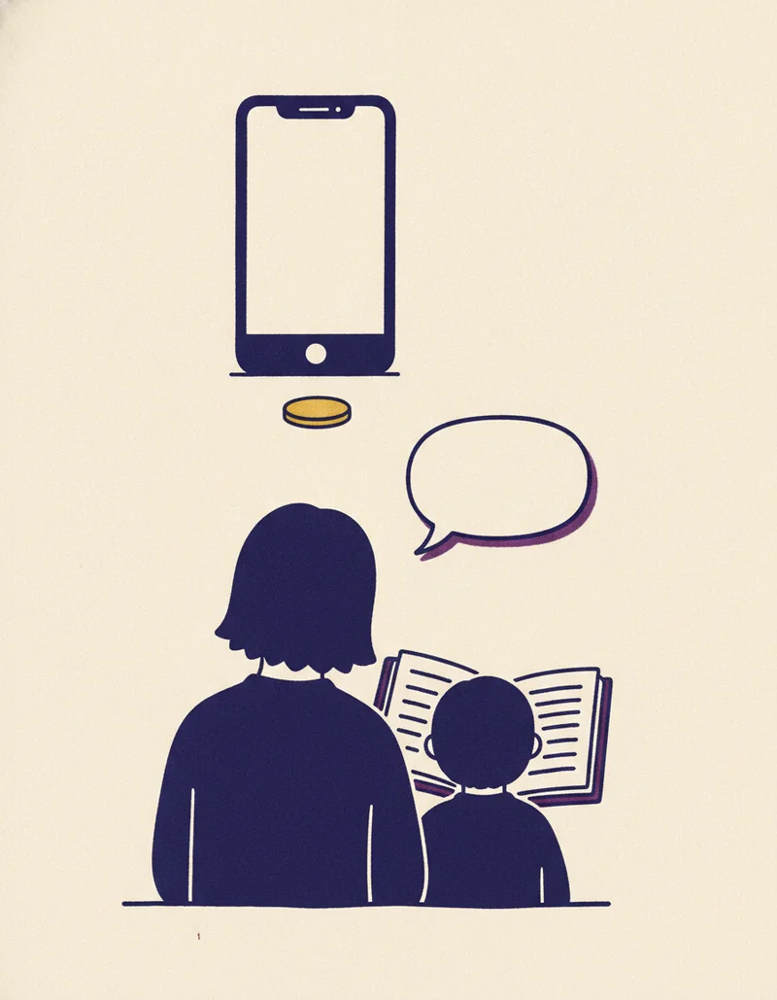
「今日のお風呂で、シャンプーの文字を探してみて」。幼児の親に週3回こんな一言をSMSで送るREADY4Kは、費用が年1ドル程度なのに、読み書きの基礎力を約0.1SD、家庭での関わりを0.2〜0.3SD改善しました。高校生版（教師から保護者への近況ひとこと）でも単位の取り落としが大きく減った報告があります。親の愛情は足りている。足りないのは、忙しさの中の「きっかけ」だったという発見です。
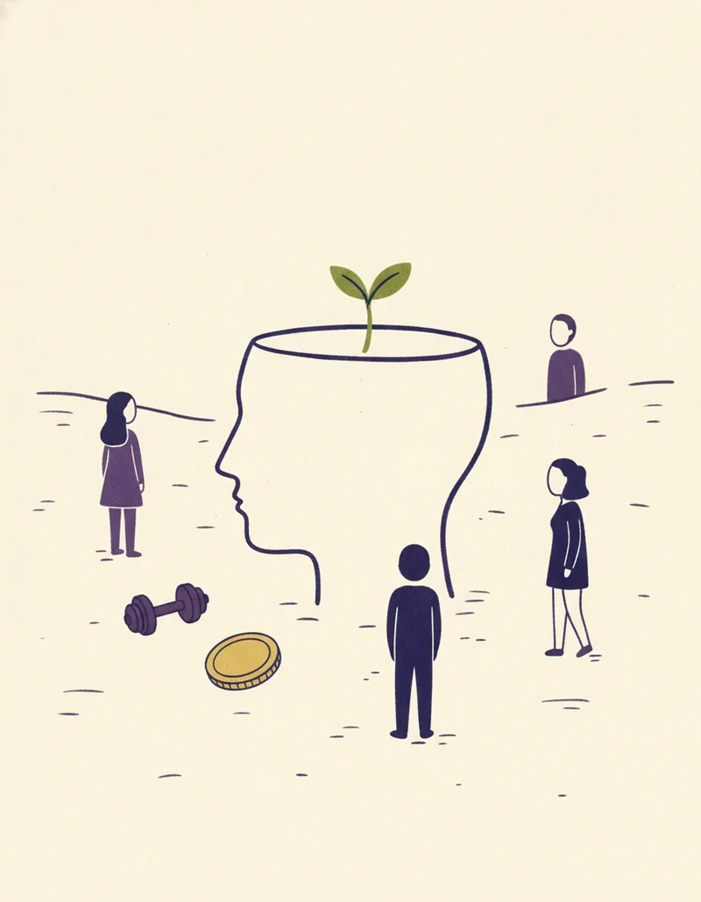
「知能は筋肉のように鍛えられる」と学ぶ25分×2回のオンライン教材を、全米代表サンプルの高校1年生に届けたRCT。低学力層のGPAが+0.1、費用は1人1ドル未満。効果量は小さいのに費用が極小なので、費用対効果では上位に入ります。ただし効果が出たのは、挑戦を歓迎する仲間文化のある学校だけ。心の持ちようは土壌があって初めて芽を出す——環境との相互作用まで示した、事前登録済みの大規模実験です。
きのこ図鑑に毒キノコの頁があるように、この図鑑にも「効かなかった・逆効果だった」記録が要ります。直感的に効きそうなものほど危ない。ここに並ぶ失敗はどれも、次の発明の親になりました。
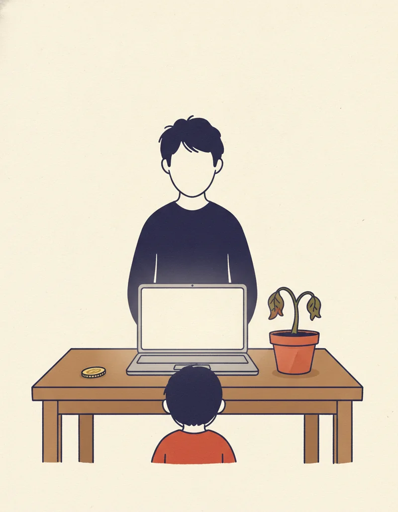
「子ども1人に1台のノートPCを」。理想に世界が沸き、ペルーは大規模導入に踏み切りました。318校のRCTの結果は、数学も国語も効果なし。パソコンの操作は上達したものの、学びには変換されませんでした。機材があっても「使い方の指導」という配管がなければ水は流れない。教科書配布（ケニア）と同じ構造の失敗を、最先端のテクノロジーがなぞった例です。
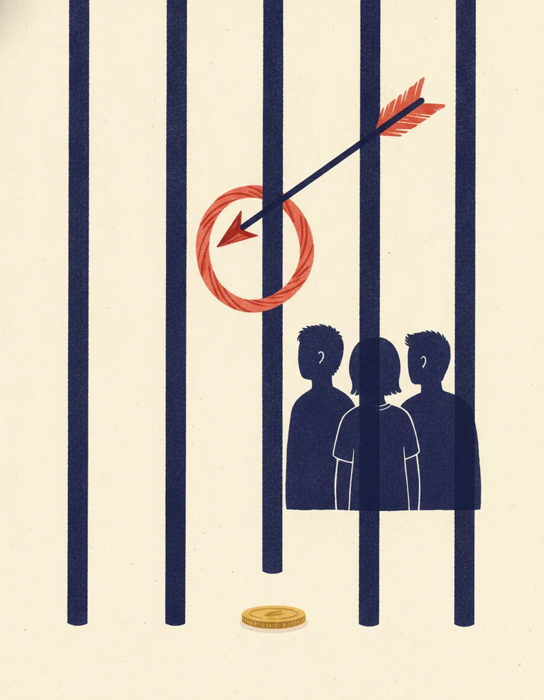
非行少年に刑務所を見学させ、受刑者に「脅して」もらう更生プログラム。テレビ番組にもなり人気を博しましたが、9本のRCTを統合した系統的レビューの結論は「非行がむしろ1〜28%増える」でした。恐怖は行動を変えない、どころか逆流する。「直感的に効きそう」と「効く」の距離を測るためにこそ検証がある——この図鑑に毒キノコの章を設けた理由そのものです。
ここまでの21枚に、日本発の研究は一枚もありません。
日本には、この図鑑の収載水準——ランダム化比較試験と長期追跡——を満たす教育投資の検証が、ほぼ存在しません。少人数学級の準実験研究や、自治体と研究者による実証の萌芽はありますが、年間十数兆円の公教育投資と数千億円規模の企業研修市場の大半は、「測らないまま」動いています。この白紙は批判ではなく、招待状のつもりです。あなたの現場の一クラス、一研修からでも、検証は始められます。この頁がカードで埋まっていく未来を、この図鑑は待っています。
ここに載っているのは、測られてきた教育投資のほんの一部です。あなたの知っている「厳密に検証された教育・学習・育成への投資」を、ぜひ教えてください。国、対象、スケールは問いません。毒キノコの情報も大歓迎です。いただいた情報をもとに、この帳簿を一緒に育てていけたら嬉しいです。